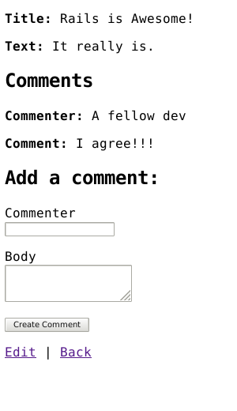

1 Klavuz Kabulleri
Bu klavuz sıfırdan bir Rails uygulaması geliştirmek isteyen başlangıç seviyesi kullanıcılar için hazırlandı. Rails ile ilgili önceden bir bilginiz olması gerekmez.
Rails bir web uygulama geliştirme iskeleti ve Ruby programlama dili üzerinde çalışır. Ruby ile önceden bir deneyiminiz yoksa doğrudan Rails'e dalan bir yazı bulacaksınız. Ruby öğrenmek için hazırlanmış birkaç çevrim içi kaynak:
Bazı dökümanlar halen mükemmel olmalarına rağmen Ruby eski versiyonları üzerine yazılmıştır. Rails güncel yapısında kullanılmayan özellikleri olabilir.
2 Rails Nedir?
Rails bir web uygulama geliştirme iskeleti ve Ruby programlama dili ile yazılmış. Her geliştiricinin başlarken ihtiyacı olabilecek şeyleri kabuller halinde vererek web uygulama geliştirmeyi kolaylaştırır. Diğer diller ve iskeletlerden çok daha az kod yazarak daha fazla sonuç elde etmenizi sağlar. Uzmanlaşmış Rails geliştiricileri Rails'in ayrıca programlamayı eğlenceli hale getirdiğini söylerler.
Rails biraz sivri akıllıdır. İşleri yapmanın mutlaka bir en iyi yolu olduğunu bilir ve sizi buna zorlar, bazı durumlarda alternetiflerden de caydırır. "Rails Yolu" nu öğrenmişseniz üretkenlikte korkunç hızlandığınızı farkedeceksiniz. Eğer başka dillerden gelen eski alışkanlıklarınızda devam etmeye inat ederseniz büyük ihtimalle daha az mutlu olacaksınız.
Rails filozofisi iki temel klavuz prensipten oluşur:
- Don't Repeat Yourself: DRY (Kendini tekrar etme!) bir yazılım geliştirme prensibi. "Bir sistem içinde bir bilgi parçası tek bir yerde açıkça ve tam olarak tanımlanır". Aynı bilgiyi tekrar tekrar yazmayarak kodumuz daha sürdürülebilir, daha geliştirilebilir ve daha sorunsuz olacaktır.
- Convention Over Configuration: (Konfigürasyon yerine kabuller) Rails bir web uygulamasında yapılması gerekenler hakkında en iy fikirlere sahiptir. Bunları kabuller olarak sıralar. Bir sürü konfigürasyon dosyasına ihtiyaç duymadan bu kabuller doğrultusunda uygulama geliştirebilirsiniz.
3 Yeni Bir Rails Projesi Üretmek
Bu klavuzu okumanın en iyi yolu adım adım takip etmek. Yapacağımız örnek uygulamayı çalıştırmak için bu adımlar yeterlidir, ayrıca bir kodlama gerekmez.
Bu klavuzu takip ederek günlük adı verilen bir Rails projesi ile basit bir weblog
yapacaksınız. Uygulamayı yapmaya başlamadan önce Rails kurulu olduğundan emin olalım.
Aşağıdaki örnekler UNIX-benzeri işletim sisteminde $ işareti kullanarak terminal
ile girilen komutlar olduğunu belirtir. Gerçeği burada gösterilenden farklı olabilir.
Windows kullanıyorsanız sizdeki terminalde C:\source_code> benzeri bir şey yazacaktır.
3.1 Rails Kurulumu
Rails kurmadan önce sisteminizde gerekli diğer kurulumlar var mı kontrol etmelisiniz. Bunlar:
- Ruby
- SQLite3
Windows 10 kullanıcıları sizin işiniz biraz daha zor. Bu güne kadar karşılaştıklarım için şu linklere bakın : Windows 10 Rails Kurulumu , ruby-build kurulması ve bu klavuzu bilgisayarıma kurmaya çalışırken sorun olan Curses gem kurulum hatası
3.1.1 Ruby Kurulumu
Bir komut satırı açın. macOS'da Terminal.app açın; Windows'ta Start menüden "Run" seçin ve
cmd.exe çalıştırın. $ işareti ile aşağıda verilecek tüm komutlar bu komut satırnda
girilecektir. Kurulu olan Ruby versiyonunu görmek için:
$ ruby -v
ruby 3.1.2p20 (2022-04-12 revision 4491bb740a) [x86_64-linux]
Yukarıda bana gelen cevap Windows 10 işletim sistemi ve Ubuntu on Windows uygulaması konsolunda gelen cevap. Rails için Ruby versiyon 2.7.0 ve sonrası gerekir. En son Ruby versiyonunu kullanmanız tavsiye edilir. Eğer daha küçük bir versiyon numarası gelirse (mesela 2.3.7, or 1.8.7), yeni bir Ruby versiyonu kurulumuna ihtiyacınız var demektir.
Windows'ta Rails kurmak için önce Ruby Installer kurmanız gerekiyor.
Bir çok işletim sistemine göre kurulumları görmek için ruby-lang.org adresine göz atın.
3.1.2 SQLite3 Kurulumu
Bundan başka SQLite3 veri tabanı kurmanız da gerekiyor. UNIX-benzeri işletim sistemleri üzerlerinde SQLite3 yüklü gelir. Diğerleri kurulum detaylarını SQLite3 website adresinde bulabilir.
Sağlıklı yüklenmiş olduğunu ve sisteme PATH ayarı yapılmış olduğunu kontrol etmek için:
$ sqlite3 --version
Program versiyonu yazılacaktır.
3.1.3 Rails Kurulumu
Windows 10 kullanıcıları umarım yukarıdaki notumu görmüştür. Rails kurmak için RubyGems tarafından
sağlanan gem install komutunu kullanırız:
$ gem install rails
Her şeyin sağlıklı kurulmuş olduğunu görmek için aşağıdaki komutu terminalde çalıştırabiliyor olmanız gerekir:
$ rails --version
Rails 7.0.2.4
"Rails 7.0.0" gibi bir cevap geldiyse devam etmeye hazırsınız demektir.
3.2 Günlük Uygulamasını Üretmek
Rails jeneratörler denen ve gereken her işlem için özel tasarlanmış komutları bulunan bir çok script ile birlikte gelir. Bunlardan biri yeni uygulama jeneratörü, size yeni bir Rails uygulaması temelini sağlar böylece tek tek kendiniz yazmaktan kurtulursunuz.
Bu jeneratörü kullanmak için bir terminal açın, hangi klasörde çalışacaksanız ona gidin ve şu komutu çalıştırın:
$ rails new blog
Bu Blog adı verilen uygulamayı blog klasörü içinde üretecektir ve gereken tüm gem
dosyalarını Gemfile içinden bakıp bundle install ile yükleyecektir.
Rails uygulama jeneratörünün tüm olası opasiyonlarını rails new --help komutu
çalıştırıp görebilirsiniz.
Blog uygulamasını ürettikten sonra uygulama klasörüne girin:
$ cd blog
blog klasörü Rails uygulamasını yapısını oluşturan bir çok dosya ve klasör içerir.
Bu yazıda kullanılacak dosyaların büyük çoğunluğu app klasöründe. Fakat hepsi hakkında
kısaca bilgiler verelim:
| Dosya/Klasör | Amaç |
|---|---|
| app/ | Kontrolörler, modeller, görseller, yardımcılar, mail işleyiciler, kanallar, görevler ve uygulama için gereken dış dosyalar. Bu klavuzun geri kalanında bu klasörde yoğunlaşacakssınız. |
| bin/ | Uygulamanızı başlatan rails script'ini barındırır. Ayrıca uygulamanızın ayarlarını yapmak, güncellemek, son yerine yüklemek veya uygulamanızı çalıştırmak için scriptler barındırır. |
| config/ | Uygulamanızın yönlendirmeleri, veritabanı vs için konfigürasyon dosyalarını barındırır. Daha detaylı olarak Rails Uygulamalarının Konfigürasyonu sayfasında incelenecektir. |
| config.ru | Rack-temelli server'lar için uygulamayı çalıştırırken kullanılacak Rack konfigürasyonu. Daha fazla bilgi Rack websitesinde. |
| db/ | Kullanmakta olduğunuz veri tabanı şemasını ve migrasyon dosyalarını barındırır. |
| Gemfile Gemfile.lock |
Bu dosyalar Rails uygulamanız ile hangi gem bağlantılarının olduğunu belirtmenize yarar. Bu dosyalar Bundler gem tarafından kullanılır. Bundler hakkında daha fazla bilgi için Bundler websitesine bakınız. |
| lib/ | Uygulamanızı geliştirmek için modüller. |
| log/ | Uygulamanızın log dosyaları. |
| public/ | Statik dosyaları ve derlenmiş varlıkları içerir. Uygulamanız çalışırken bu klasör aynen yayınlanır. |
| Rakefile | Bu dosya komut satırından çalıştırılabilen görevleri barındırır ve yükler. Yeni görev tanımları Rails komponentleri üzerinden yapılır. Kendi yazdığınız görevler için Rakefile değiştirmek yerine uygulamanızın lib/tasks klasöründe eklemelisiniz. |
| README.md | Uygulamanız hakkında ön bilgi vermek için dosya. Bu dosyada uygulamanızı kullanacak kişilere uygulamanızın ne iş yaptığını kurulumu ve çalıştırmasının nasıl yapılacağı vs bilgilerini verirsiniz. |
| storage/ | Disk Service için Active Storage dosyaları. Bu konu Active Storage İncelemesi sayfasında işlenecektir. |
| test/ | Birim testleri, fikstürler ve diğer test aparatları. Bunlar Rails Uygulamasını Test Etmek sayfasında incelenektir. |
| tmp/ | Temporary dosyalar (cache ve pid dosyaları gibi). |
| vendor/ | Tüm üçüncü-parti yazılımlar için bir yer. Tipik bir Rails uygulamasında burası üçüncü parti gem'leri içerir. |
| .gitattributes | Git tarafından kullanılan özellikler. Daha fazla bilgi için gitattributes documentation. |
| .gitignore | Git hangi dosyaları umursamayacak GitHub - Ignoring files sayfasında ayrıntılı bilgi bulabilirsiniz. |
| .ruby-version | Bu dosya default Ruby versiyonunu içerir. |
4 Merhaba, Rails!
Başlamak için ekrana çabucak bir şeyler yazalım. Bunu yapmak için Rails uygulamanızın server'ını çalıştırmalısınız.
4.1 Web Server Çalıştırmak
Şu anda aslında çalışan bir Rails uygulamasına sahipsiniz. Çalıştığını görmek için
bilgisayarınızda bir web server çalıştırmanız gerekiyor. Bunu yapmak için aşağıdaki
komutu blog klasörü içinde çalıştırmalısınız:
$ bin/rails server
Windows kullanıyorsanız bin klasöründeki scriptleri direk olarak Ruby
interpreter'a göndermeniz gerekebilir örn. ruby bin\rails server. Bir de sadece
rails server komutu girip deneyin , bir çok sistemde rails script'inin bin klasörü
içinde olduğunu belirtmenize gerek yoktur.
JavaScript varlıklar sıkıştırması sisteminizde bir JavaScript runtime olmasını
bekler, olmaması durumunda sıkıştırma yaparken bir execjs hatası verir.
Genellikle macOS ve Windows JavaScript Runtime yüklü gelir. JRuby kullanıcıları
için therubyrhino tavsiye edilir ve JRuby ile üretilmiş uygulamalarda Gemfile
içine otomatik eklenir. Tüm desteklenen Runtime'lar
için ExecJS.
Bu komut Rails ile birlikte default olarak dağıtılan web server olan bir Puma server çalıştırır. Uygulamanızı çalışır halini görmek için tarayıcınızı açın ve http://localhost:3000 adresini açın. Rails default bilgilendirme sayfasını göreceksiniz:

localhost tarayıcı tarafından açılmak istenmezse http://127.0.0.1:3000 deneyin. Server'ı durdurmak isterseniz çalıştığı terminal penceresinde Ctrl+C basın. Geliştirme modunda Rails genellikle server'ın tekrar başlatılmasına ihtiyaç duymaz. Yaptığınız değişiklikler otomatik olarak server tarafından işlenecektir.
Bu startup sayfası yeni bir Rails uygulaması için dumanı tütme testidir: uygulamanızın bir sayfa yayınlayabilecek kadar sağlıklı konfigüre edilmiş ve çalışıyor olduğunu gösterir.
4.2 "Merhaba" Diyen Rails
Rails'in "Merhaba" demesi için en az bir route (yönlendirme) ve bir aksiyonu ile görseli olan bir kontrolör tanımlamalısınız. Yönlendirme tarayıcıdan gelen isteği kontrolör aksiyonuna yönlendirir. Kontrolör aksiyonu gereken işleri yapar ve görsel için verileri hazırlar. Bir görsel verileri istenen formatta gösterir.
Uygulanmalarına bakarsak: Yönlendirmeler Ruby DSL (Domain-Specific Language) ile yazılmış kurallardır. Kontrolörler Ruby sınıflarıdır ve public metodları da kontrolörün aksiyonlarıdır. Görseller de HTML ve Ruby karışımı bir şekilde yazılan şablonlardır.
routes dosyamıza bir yönlendirme ekleyerek başlayalım, config/routes.rb dosyasında
Rails.application.routes.draw bloğu içine şunu ekleyelim:
Rails.application.routes.draw do
get "/articles", to: "articles#index"
# For details on the DSL available within this file, see https://guides.rubyonrails.org/routing.html
end
Yukarıdaki yönlendirme GET /articles isteğini ArticlesController kontrolörünün
index aksiyonuna yönlendirir.
ArticlesController kontrolörü ve index aksiyonunu tanımlamak için kontrolör jeneratör
komutu kullanırız. (--skip-routes opsiyonu ile birlikte, çünkü halihazırda yönlendirmeyi
yaptık):
$ bin/rails generate controller Articles index --skip-routes
Rails sizin için bir kısım dosya üretecektir:
create app/controllers/articles_controller.rb
invoke erb
create app/views/articles
create app/views/articles/index.html.erb
invoke test_unit
create test/controllers/articles_controller_test.rb
invoke helper
create app/helpers/articles_helper.rb
invoke test_unit
Bunların en önemlisi kontrolör dosyası, app/controllers/articles_controller.rb.
İçeriğine bir bakalım:
class ArticlesController < ApplicationController
def index
end
end
index aksiyonu boş. Bir aksiyon görseli kendisi ayrıca yayınlamıyorsa Rails
kontrolör ve aksiyonun isimlerine göre bir görsel yayınlar. Convention Over
Configuration! Görseller app/views klasöründe yer alır. Yani index aksiyonu
default olarak app/views/articles/index.html.erb dosyasını görsel olarak yayınlar.
app/views/articles/index.html.erb dosyasını açalım ve içeriğini şunula değiştirelim:
<h1>Merhaba Rails!</h1>
Eğer server'ı kontrolör jeneratörünü çalıştırmak için durdurmuşsanız tekrar
bin/rails server ile çalıştırın. Şimdi http://localhost:3000/articles adresini
tarayıcıda açın ve yazdığımız mesajı görün!
4.3 Uygulamanın Ana Sayfasını Ayarlamak
Şu anda http://localhost:3000 hala Rails tarafından oluşturulan Rails logolu sayfayı gösteriyor. Hadi bizim "Merhaba Rails" yazımızın http://localhost:3000 adresinde olmasını sağlayalım. Bunu yapmak için uygulamamızın root path 'ını ilgili kontrolör aksiyonuna yönlendirelim.
config/routes.rb dosyasını açalım ve Rails.application.routes.draw bloğu içine
en üste:
Rails.application.routes.draw do
root "articles#index"
get "/articles", to: "articles#index"
end
Artık http://localhost:3000 adresini ziyaret ettiğimizde bizim "Merhaba Rails"
yazımızı görebiliriz. root yönlendirmesi de artık ArticlesController kontrolörünün
index aksiyonuna yönlendirildi.
Yönlendirmeler hakkında daha fazla bilgi için Baştan Sona Rails Yönlendirmeler.
5 Otomatik Yükleme
Rails uygulamaları uygulama kodu yüklemek için require satırı kullanmaz.
Dikkat ederseniz ArticlesController ApplicationController dan mirasçıdır ama
app/controllers/articles_controller.rb dosyasında şuna benzer bir kod yok
require "application_controller" # BUNU YAPMAYIN-ÖRNEKTİR.
Uygulama sınıfları ve modüllerine her yerde erişilebilir, app içinde hiç bir yerde
require kullanmanız gerkmez ve kullanmamalısınız. Bu özellik otomatik yükleme
olarak adlandırılır. Daha fazla bilgi için Autoloading and Reloading Constants.
Sadece iki durumda require kullanabilirsiniz:
-
libklasörü altındaki dosyaları yüklemek için. -
Gemfileiçinderequire: falseişaretlenen gem bağımlılıklarını yüklemek için.
6 MVC ve Siz
Evet, yönlendirmeleri, kontrolörleri, aksiyonları ve görselleri açıkladık. Tüm bunlar MVC (Model-View-Controller) yapısını kullanan tipik bir web uygulamasının parçaları. MVC daha kolay hakim olabilmek için uygulamayı işlevlere göre parçalara ayıran bir tasarım paterni. Rails gelenek olarak bu tasarım paternini takip eder.
Kontrolörümüz ve görselimiz olduğuna göre son parçayı üretelim: bir model.
6.1 Bir Model Üretmek
model veriyi temsil eden bir Ruby sınıfıdır. Ek olarak modeller Active Record adı verilen Rails özelliğini kullanarak uygulamanın veritabanıyla etkileşime girer.
Bir model tanımlamak için model jeneratörünü kullanırız:
$ bin/rails generate model Article title:string body:text
Model isimleri İngilizce tekil isimlerdir, çünkü bir model oluşumu
bir tek veri kaydını temsil eder. Bu kuralı unutmamak için yeni bir model
tanımlayan kodu hatırlasak yeter, Article.new(...) yazarız , Articles.new(...)
değil. Yeni kayıt açarken bir sürü açılmaz bir tane açılır.
Bu kod bir kaç dosya daha üretir:
invoke active_record
create db/migrate/<timestamp>_create_articles.rb
create app/models/article.rb
invoke test_unit
create test/models/article_test.rb
create test/fixtures/articles.yml
Burada dikkat etmemiz gereken veritabanı migrasyon dosyası
(db/migrate/<timestamp>_create_articles.rb) ve model dosyası
(app/models/article.rb).
6.2 Veritabanı Migrasyonları
Migrasyonlar uygulamanın veritabanı yapısını değiştirmek için kullanılır. Rails uygulamalarında migrasyonlar Ruby ile yazılmıştır bu yüzden kullanılan veritabanı türünden bağımsızdırlar.
Migrasyon dosyamızın içine bakalım:
class CreateArticles < ActiveRecord::Migration[7.0]
def change
create_table :articles do |t|
t.string :title
t.text :body
t.timestamps
end
end
end
create_table metodu çağrılması articles tablosunun nasıl yapılacağını
tarif ediyor. Default olarak burada belirtmememize rağmen create_table
metodu otomatik artan primary key olarak bir id sütununu tabloya ekler.
Yani tabloya ilk eklenen kaydın id değeri 1 olur sonraki 2 vs.
create_table bloğu içinde iki sütun özelliği veriliyor: title ve body.
Bunların eklenmesini jeneratör komutunu kullanırken biz parametre olarak
vermiştik (bin/rails generate model Article title:string body:text).
Bloğun son satırında t.timestamps metodu çağrılıyor. Bu metod created_at ve
updated_at adında iki yeni sütun daha ekler tabloya. Göreceğimiz gibi Rails
bunlardaki bilgiyi kontrol eder. Yeni kayıt oluşturunca ve kaydı değiştirince
ilgili sütuna değer girer.
Migrasyonumuzun gerçekleşmesi için bir komut girmemiz gerekiyor:
$ bin/rails db:migrate
Komut tablonun üretildiğine dair bilgi verecektir:
== CreateArticles: migrating ===================================
-- create_table(:articles)
-> 0.0018s
== CreateArticles: migrated (0.0018s) ==========================
Migrasyonlar hakkında daha fazla bilgi için Active Record Migrasyonları.
Şimdi model'imizi kullanarak tablomuzla etkileşime girebiliriz.
6.3 Veritabanıyla Etkileşim İçin Model Kullanımı
Modelimizle biraz oynamak için Rails'in console denen özelliğinden faydalanacağız.
Console irb gibi bir interaktif kodlama ortamı, fakat otomatik olarak Rails ve
bizim uygulama kodumuzu yükler.
Rails konsola şu komut ile girelim:
$ bin/rails console
Şuna benzer bir irb prompt gelir karşımıza:
Loading development environment (Rails 7.0.0)
irb(main):001:0>
Bu komut satırında yeni bir Article nesnesi üretebiliriz:
irb> article = Article.new(title: "Merhaba Rails", body: "Ben Rails'deyim")
Şunu dikkatimizden kaçırmayalım, biz sadece bu nesneyi ürettik. Bu nesne henüz
veritabanına kaydedilmedi. Şu anda sadece konsolda erişilebilen bir nesne. Nesneyi
veritabanına saklamak için save
metodunu çağırmalıyız:
irb> article.save
TRANSACTION (0.1ms) begin transaction
Article Create (3.0ms) INSERT INTO "articles" ("title", "body", "created_at", "updated_at") VALUES (?, ?, ?, ?) [["title", "Merhaba Rails"], ["body", "Ben Rails'deyim"], ["created_at", "2022-04-29 21:38:19.720540"], ["updated_at", "2022-04-29 21:38:19.720540"]]
TRANSACTION (11.9ms) commit transaction
=> true
Yukarıdaki çıktı bir INSERT INTO "articles" ... veritabanı sorgusu gösteriyor.
Bu article kaydının tabloya kaydedildiğini gösteriyor. article nesnesine tekrar
bakarsak bir şeylerin değiştiğini farkedeceğiz:
irb> article
=>
#<Article:0x00007f32cfc74b98
id: 1,
title: "Merhaba Rails",
body: "Ben Rails'deyim",
created_at: Fri, 29 Apr 2022 21:38:19.720540000 UTC +00:00,
updated_at: Fri, 29 Apr 2022 21:38:19.720540000 UTC +00:00>
id, created_at, ve updated_at özelliklerinin şimdi değerleri var. Nesneyi
kaydettiğimizde Rails bu alanları bizim için doldurmuş.
Bu article nesnesini veritabanından okumak istediğimizde modelin find
metodunu parametresinde id değeri olacak şekilde çağırırız:
irb> Article.find(1)
=> #<Article:0x00007f32cd2173f0
id: 1,
title: "Merhaba Rails",
body: "Ben Rails'deyim",
created_at: Fri, 29 Apr 2022 21:38:19.720540000 UTC +00:00,
updated_at: Fri, 29 Apr 2022 21:38:19.720540000 UTC +00:00>
Veritabanından tüm Article tablosundaki verileri çekmek istersek modelin all
metodunu kullanırız:
irb> Article.all
=> [#<Article:0x00007f32ce0640c0
id: 1,
title: "Merhaba Rails",
body: "Ben Rails'deyim",
created_at: Fri, 29 Apr 2022 21:38:19.720540000 UTC +00:00,
updated_at: Fri, 29 Apr 2022 21:38:19.720540000 UTC +00:00>]
Bu metod bir ActiveRecord::Relation nesnesi döner,
onu süper güçleri olan bir array gibi düşünebilirsiniz.
Daha fazla bilgi için Active Record Temelleri ve Active Record Sorgu Arabirimi sayfalarına bakınız.
Modeller MVC puzzle'ının son parçasıydı. Şimdi tüm parçaları bir araya getirelim.
6.4 Bir Article Listesi Göstermek
Şimdi app/controllers/articles_controller.rb kontrolör dosyamıza dönelim ve
index aksiyonunu veritabanından tüm article kayıtlarını çekecek şekilde düzenleyelim:
class ArticlesController < ApplicationController
def index
@articles = Article.all
end
end
Kontrolördeki oluşum değişkenlerine görsel içinden erişilebilir. Yani
app/views/articles/index.html.erb dosyası içinden @articles değişkenine erişebiliriz.
Bu dosyayı açalım ve içeriğini şöyle değiştirelim:
<h1>Makaleler</h1>
<ul>
<% @articles.each do |article| %>
<li>
<%= article.title %>
</li>
<% end %>
</ul>
Yukarıdaki kod HTML ve ERB karışımı bir kod. ERB dökümanın içinde Ruby kodunu
çalıştırabilmek için kullanılan bir görsel şablon sistemi. Burada iki çeşit ERB
tag kullanıyoruz, <% %> ve <%= %>. <% %> tag içerisindeki Ruby kodu çalıştır
manasına gelir. <%= %> tag ise içindeki Ruby kodu çalıştır ve sonucunu görselde
bulunduğum noktaya yaz anlamı taşır. ERB tag'ları içinde Ruby kodu olarak her şeyi
yazabilirsiniz, ancak okunabilirlik açısından ERB tag içindeki kodu kısa tutmak
tercih edilmelidir.
@articles.each kodunun saonucunu yazmak istemediğimiz için bu kodu <% %>
tag içine koyduk. Fakat article.title kodunun sonucunu görsele yazdırmak
istediğimizden (her bir article için) kodu <%= %> tag içine yazdık.
Sonucu http://localhost:3000 adresini ziaret edip görebiliriz. (Unutmayın
bin/rails server komutu çalışıyor olmalı). Şimdi burada ne yaptık:
- Tarayıcı server'dan bir istekte bulunur:
GET http://localhost:3000. - Rails uygulamamız isteği alır.
- Rails router bu isteği
ArticlesControllerkontrolörüindexaksiyonuna yönlendirir. -
indexaksiyonuArticlemodelini kullanarak veritabanından tüm kayıtları çeker. - Rails otomatik olarak
app/views/articles/index.html.erbgörselini yayınlar. - Yayınlarken görsel içindeki ERB kodlar işlenerek sonuçlar HTML olarak yayınlanır.
- Server bu HTML'i içeren bir cevabı tarayıcıya gönderir.
Tüm MVC parçalarını bir arada kullandık ve ilk kontrolör aksiyonumuzu yazdık! Sırada ikinci aksiyon var.
7 CRUD Lazımsa CRUD Yap
Hemen tüm veriye dayalı web uygulaması CRUD (Create, Read, Update, and Delete) işlemleri yapar. Üret, Oku, Güncelle ve Sil işlemleri uygulamanızın ana ihtiyaçlarını oluşturuyor. Rails CRUD işlemlerini basitleştirmek için bir çok özelliğe sahiptir.
Bu özellikleri uygulamamıza yeni fonksiyonellikler kazandırarak incelemeye başlayalım.
7.1 Tek Bir Article Göstermek
Şu anda veri tabanımızdaki tüm makalelerin listesini görebiliyoruz. Yeni bir görsel ekleyerek sadece bir tane makale başlığı ve içeriğini gösterelim.
Yeni kontrolör aksiyonumuz için yönlendirme ekleyerek başlayalım. config/routes.rb
dosyasını açın ve şu yönlendirmeyi ekleyin:
Rails.application.routes.draw do
root "articles#index"
get "/articles", to: "articles#index"
get "/articles/:id", to: "articles#show"
end
Yeni yönlendirmemiz yine bir get yönlendirmesi, fakat path değerinde ekstra bir
şey var: :id . Burada bir yönlendirme parametresi tarif ediliyor. Bir yönlendirme
parametresi istekte bulunulan adresin bir kısmını alır ve oradaki değerleri params
Hash içine koyar ve bu değerlere kontrolör aksiyonundan erişilebilir. Örneğin
GET http://localhost:3000/articles/1 isteğinde son bölümdeki 1 değeri yukarıdaki
yönlendirme tanımına göre :id değeri olarak alınır ve ArticlesController kontrolörü
show aksiyonunda params[:id] notasyonu ile kullanılabilir.
Şimdi bu show aksiyonunu app/controllers/articles_controller.rb dosyasında index
aksiyonu altına tanımlayalım:
class ArticlesController < ApplicationController
def index
@articles = Article.all
end
def show
@article = Article.find(params[:id])
end
end
show aksiyonu Article.find metodunu yönlendirme parametresindeki ID değeriyle çağırır
(daha önce gördük).
Dönen makale kaydı @article oluşum değişkeni içine saklanır, böylece görsel bu değere
erişebilir. Default olarak show aksiyonu app/views/articles/show.html.erb görselini
yayınlar.
Şimdi app/views/articles/show.html.erb dosyasını şu içerikle tanımlayalım:
<h1><%= @article.title %></h1>
<p><%= @article.body %></p>
Şimdi konsoldayken kaydettiğimiz makaleyi http://localhost:3000/articles/1 adresinde görebiliriz.
Bir düzenleme yapalım, makalelerin listesini gösterdiğimiz app/views/articles/index.html.erb
görselinden tıklanan makalenin sayfasını çağıran bir link haline getirelim:
<h1>Articles</h1>
<ul>
<% @articles.each do |article| %>
<li>
<a href="/articles/<%= article.id %>">
<%= article.title %>
</a>
</li>
<% end %>
</ul>
7.2 Resourceful Routing
Böylece CRUD yapısının "R" (Read - Okuma) kısmını yaptık. Sırada "C" (Create - Yeni kayıt),
"U" (Update - Güncelle) ve "D" (Delete - Sil) kısımlarını yapmak var. Tahmin
edeceğiniz gibi bunun için yeni yönlendirmeler tanımlayıp, kontrolöre ve görsele
yeni aksiyonlar ekleyeceğiz. Üzerinde CRUD işlemleri yapılacak olan kavrama resource
adı verilir, mesela örneğimizde article bir resource.
Rails resources
adı verilen bir metod sunar, bu metod bağladığı kaynakla ilgili olası tüm yönlendirmeleri
bir standart doğrultusunda gerçekleştirir. Bu kolaylıktan yararlanıp "C", "U" ve "D"
bölümlerine geçmeden config/routes.rb dosyasında daha önce tanımladığımız get
satırlarını nı da silip resources ile değiştirelim:
Rails.application.routes.draw do
root "articles#index"
resources :articles
end
bu resources metodunun bize hangi yönlendirmeleri otomatik yaptığını görmek
için bin/rails routes komutunu konsolda veririz:
$ bin/rails routes
Prefix Verb URI Pattern Controller#Action
root GET / articles#index
articles GET /articles(.:format) articles#index
POST /articles(.:format) articles#create
new_article GET /articles/new(.:format) articles#new
edit_article GET /articles/:id/edit(.:format) articles#edit
article GET /articles/:id(.:format) articles#show
PATCH /articles/:id(.:format) articles#update
PUT /articles/:id(.:format) articles#update
DELETE /articles/:id(.:format) articles#destroy
resources metodu yönlendirme URL'lerini bu standarda göre ürettikten sonra
path yardımcı metodlarını da üretir. Bunları kodumuzda kullanacağız. Bu yardımcı
metodların isimleri yukarıda listede Prefix diye verilen değerlerin ardına _url
ya da _path konarak elde edilir. Örneğin article_path metodu verilmiş olan article
değeri ile "/articles/#{article.id}" adresine gider. Bu metodları kullanarak
app/views/articles/index.html.erb dosyasındaki linklerimizi düzenleyelim:
<h1>Makaleler</h1>
<ul>
<% @articles.each do |article| %>
<li>
<a href="<%= article_path(article) %>">
<%= article.title %>
</a>
</li>
<% end %>
</ul>
Bununla beraber Rails link_to
yardımcı metodunu kullanarak kodumuzu biraz daha güzelleştirebiliriz. link_to
yardımcı metodu parametresinde ilk verileni link yazısı, ikinci verileni link
hedefi olarak değerlendiren bir link üretir. İkinci parametre olarak bir model nesnesi
verirsek link_to alakalı path yardımcısını çağırarak bu nesneden bir path
üretecektir. Örneğin biz link_to metoduna bir article verirsek article_path
metodunu çağıracaktır. Bu doğrultuda app/views/articles/index.html.erb görselini
şöyle düzenleriz:
<h1>Makaleler</h1>
<ul>
<% @articles.each do |article| %>
<li>
<%= link_to article.title, article %>
</li>
<% end %>
</ul>
Güzel!
Yönlendirmeler hakkında daha fazla bilgi için Baştan Sona Rails Yönlendirmeler.
7.3 Yeni Makale Eklemek
Sıra geld CRUD yapının "C" (Create - Yeni kayıt) kısmına. Web uygulamalarında yeni bir kayıt eklemek çok adımlı bir iş. İlk önce kullanıcı doldurmak için bir form talep eder ve doldurur. Sonra kullanıcı bu formu gönderir. Eğer hata yoksa kayıt eklenir ve bir kısım konfirmasyon bilgisi gösterilir. Hata olursa form hata mesajları ile birlikte tekrar gösterilir ve proses tekrar edilir.
Bir Rails uygulamasında bu adımlar konrolörün new ve create aksiyonlarında
gerçekleştirilir. Şimdi app/controllers/articles_controller.rb kontrolörüne
show aksiyonu altına bu aksiyonların tipik şeklini ekleyelim:
class ArticlesController < ApplicationController
def index
@articles = Article.all
end
def show
@article = Article.find(params[:id])
end
def new
@article = Article.new
end
def create
@article = Article.new(title: "...", body: "...")
if @article.save
redirect_to @article
else
render :new, status: :unprocessable_entity
end
end
end
new aksiyonu yeni bir article kaydı oluşturur, fakat veritabanına kaydetmez.
Bu article yayınlanan formda kullanılacak. Default olarak new aksiyonu
app/views/articles/new.html.erb görselini yayınlar (birazdan tanımlayacağız).
create aksiyonu title ve body değerleri olan bir article oluşturur, ve onu
kaydetmeye çalışır. Ağer article sorunsuz kaydedilebilirse, aksiyon tarayıcıyı
article sayfasına yani "http://localhost:3000/articles/#{@article.id}" adresine
yönlendirir. Kaydetmek başarısız olursa aksiyon formu tekrar göstermek için
app/views/articles/new.html.erb görselini yayınlar ama bu sefer yanında status
kodu vardır 422 Unprocessable Entity.
Burada verilen title ve body değerleri şimdilik dummy, formun tasarımı bittikten
sonra tekrar buraya dönüp düzenleyeceğiz.
redirect_to
metodu tarayıcının yeni bir istekte bulunmasına sebep olur, ancak render metodu belirtilen görseli
bulunulan istek için cevap olarak yayınlar. redirect_to metodunu veritabanı ya da
uygulama adımı değiştirdikten sonra kullanmak önemlidir. Aksi durumda sayfa yenilenirse
tarayıcı aynı isteği bir daha yapacak ve yeniden kayıt yapılacaktır.
7.3.1 Form Builder Kullanmak
Rails'in form builder özelliğini kullanarak formumuzu oluşturacağız. Form builder kullanarak minimum miktarda kod yazarak Rails standartlarını karşılayabilen form yapabiliriz.
app/views/articles/new.html.erb görselini aşağıdaki içerikle tanımlayalım:
<h1>New Article</h1>
<%= form_with model: @article do |form| %>
<div>
<%= form.label :title %><br> <!-- form.label :title, "Başlık :" -->
<%= form.text_field :title %>
</div>
<div>
<%= form.label :body %><br> <!-- form.label :body, "İçerik :" -->
<%= form.text_area :body %>
</div>
<div>
<%= form.submit %> <!-- form.submit value: "Makale Ekle" -->
</div>
<% end %>
Etiketlerin kodları yanında yorum olarak istediğiniz yazıları nasıl yazacağınızı basit yoldan gösterdim.
form_with
yardımcı metodu bir form builder oluşturur. form_with bloğu içinde label ve text_field gibi
metodlar çağırarak form builder'in ilgili elemanı görsele ekletmesini sağlıyoruz.
form_with metod çağrımız sonucunda şöyle bir form yayınlanacaktır:
<form action="/articles" accept-charset="UTF-8" method="post">
<input type="hidden" name="authenticity_token" value="...">
<div>
<label for="article_title">Title</label><br>
<input type="text" name="article[title]" id="article_title">
</div>
<div>
<label for="article_body">Body</label><br>
<textarea name="article[body]" id="article_body"></textarea>
</div>
<div>
<input type="submit" name="commit" value="Create Article" data-disable-with="Create Article">
</div>
</form>
Form builder hakkında daha fazla bilgi için Action View Form Yardımcıları.
7.3.2 Strong Parameters Kullanmak
Formdan gönderilen veri yönlendirme parametreleri gib params hash değişkenine
konacaktır. Böylece create aksiyonu içinde title değerine params[:article][:title]
ve body değerine params[:article][:body] şeklinde erişebiliriz. Bu parametreleri
Article.new satırına tek tek verebiliriz. Ancak bu hem hata yapmaya açık hem
de tablo sütun sayısı arttıkça çok yorucu olacaktır.
Bunun yerine verileri içeren tek bir hash olarak parametreyi verebiliriz. Ancak
hala bu hash içinde hangi parametrelerin izin verildiğini belirtmemiz gerekir.
Aksi takdirde kötü niyetli bir kullanıcı özel verilerin üzerine yazmak için extra
parametreler gönderebilir. Gerçekte params[:article] değerini filtre etmeden
göndermeye kalkarsak Rails bize bir ForbiddenAttributesError hata mesajı vererek
problem hakkında bizi bilgilendirecektir. Bu yüzden Rails'in Strong Parameters
denilen özelliğini kullanarak params değerini filtre ederiz. Bunu params için
bir strong typing olarak
düşünebiliriz.
Şimdi app/controllers/articles_controller.rb kontrolörü en sonuna private olarak
bir metod ekleyelim adı da article_params olsun ve params değerini filtrelesin.
Sonra da create metodunu bunu kullanacak şekilde değiştirelim:
class ArticlesController < ApplicationController
def index
@articles = Article.all
end
def show
@article = Article.find(params[:id])
end
def new
@article = Article.new
end
def create
@article = Article.new(article_params)
if @article.save
redirect_to @article
else
render :new, status: :unprocessable_entity
end
end
private
def article_params
params.require(:article).permit(:title, :body)
end
end
Strong Parameters hakkında daha fazla bilgi için Action Controller İncelemesi § Strong Parameters.
7.3.3 Doğrulamalar ve Hata Mesajı Göstermek
Gördüğümüz gibi bir kayıt eklemek çok adımlı bir işlem. Geçersiz kullanıcı
girdilerini incelemek bir diğer adım. Rails bize geçersiz kullanıcı girdilerini
işlemeye yardımcı olan validations (doğrulama) adında bir özelliğe sahiptir.
Doğrulamalar, model nesnesi kaydedilmeden önce bakılan kurallardır. Eğer bu
kurallardan biri bile hata verirse kayıt işlemi iptal edilir ve model nesnesinin
errors özelliğine hata mesajları eklenir.
Şimdi app/models/article.rb dosyasında modelimize bazı doğrulamalar ekleyelim:
class Article < ApplicationRecord
validates :title, presence: true
validates :body, presence: true, length: { minimum: 10 }
end
İlk doğrulama title değerinin olmak zorunda olduğunu belirtir. title string
olduğu için, bunun manası değeri en az bir tane boşluk-olmayan karakter olmalıdır.
İkinci doğrulama body değerinin de olmak zorunda olduğunu belirtiyor. Ek olarak
body değeri en az 10 karakter uzunluğunda olmalıdır diyor.
Merak ediyorsunuzdur bu title ve body isimlerini biz bu şekilde özellik
olark hiç bir yerde tanımlamadık, nerede tanımlandılar? Active Record model
özelliklerini tablonun her sütunundan otomatik olarak oluşturur, bu yüzden model
dosyası içinde ayrıca tanımlamanıza gerek yoktur.
Doğrulama yaptığımıza göre title ve body için kurala uymayan değerler gönderilince
hata mesajı oluşacak demektir. app/views/articles/new.html.erb dosyası kodumuza
bu hata mesajlarını yazacak bir bölüm ekleyelim, ne de olsa kayıt gerçekleşemeyince
tekrar bu görsele dönecek:
<h1>Yeni Makale</h1>
<%= form_with model: @article do |form| %>
<div>
<%= form.label :title, "Başlık :" %><br>
<%= form.text_field :title %>
<% @article.errors.full_messages_for(:title).each do |message| %>
<div><%= message %></div>
<% end %>
</div>
<div>
<%= form.label :body, "İçerik :" %><br>
<%= form.text_area :body %>
<% @article.errors.full_messages_for(:body).each do |message| %>
<div><%= message %></div>
<% end %>
</div>
<div>
<%= form.submit value: "Makale Ekle" %>
</div>
<% end %>
full_messages_for metodu belirtilen özellik için kullanıcının
anlayabileceği hata mesajlarını içeren bir array döner. Hata yoksa bu array
boş olur bu durumda da mesaj bölümü görsele hiç çıkmaz.
Her şeyi birlikte anlamak için new ve create aksiyonlarına tekrar bakalım:
def new
@article = Article.new
end
def create
@article = Article.new(article_params)
if @article.save
redirect_to @article
else
render :new, status: :unprocessable_entity
end
end
http://localhost:3000/articles/new adresini tarayıcıda açtığımızda GET /articles/new
isteği new aksiyonuna yönlendirilir. new aksiyonu @article değerini kaydetmeye
kalkmaz, bu yüzden doğrulamalar çalışmaz ve hata mesajları verilmez.
Formu gönderdiğimizde POST /articles isteği create aksiyonuna yönlendirilir. create
aksiyonu @article değerini kaydedecektir. Bu yüzden doğrulamalar çalışır. Eğer
doğrulama hataya düşerse @article değeri kaydedilmez ve app/views/articles/new.html.erb
görseli tekrar yayınlanarak hata mesajlarının gösterilmesi sağlanır.
Doğrulamalar hakkında daha fazla bilgi için Active Record Doğrulamalar. Doğrulama hata mesajları hakkında daha fazla bilgi için Active Record Validations § Doğrulama Hatalarıyla Çalışmak.
7.3.4 Toparlayalım
Şimdi http://localhost:3000/articles/new adresini ziyaret ederek yeni makale
ekleyebiliyoruz. Toparlamak için app/views/articles/index.html.erb görselinden
buraya bir link koyalım ki kullanıcı adrese gelebilsin:
<h1>Makaleler</h1>
<ul>
<% @articles.each do |article| %>
<li>
<%= link_to article.title, article %>
</li>
<% end %>
</ul>
<%= link_to "Yeni Makale", new_article_path %>
7.4 Bir Makaleyi Değiştirmek
CRUD yapısının "CR" kısmını bitirdik, sıra "U" (update - güncelle) kısmında. Bir kaydın güncellenmesi yeni kayıt üretilmesine çok benzer bir proses. İkisi de çok adımlı işlemler. İlk önce kullanıcı veriyi düzenlemek için bir form talebinde bulunur. Kullanıcı formu gönderir. Girilen değerlerde hata yoksa değerler kaydedilir. Aksi halde form hata mesajları ile birlikte tekrar yayınlanarak işlem tekrar edilir.
Bu adımlar kontrolörün edit ve update aksiyonları ile işlenir. Şimdi
app/controllers/articles_controller.rb kontrolörüne create aksiyonu altına
bu aksiyonların tipik kodunu yazalım:
class ArticlesController < ApplicationController
def index
@articles = Article.all
end
def show
@article = Article.find(params[:id])
end
def new
@article = Article.new
end
def create
@article = Article.new(article_params)
if @article.save
redirect_to @article
else
render :new, status: :unprocessable_entity
end
end
def edit
@article = Article.find(params[:id])
end
def update
@article = Article.find(params[:id])
if @article.update(article_params)
redirect_to @article
else
render :edit, status: :unprocessable_entity
end
end
private
def article_params
params.require(:article).permit(:title, :body)
end
end
Dikkat ederseniz edit ve update aksiyonları new ve create aksiyonları
ile çok benzer çalışıyor.
edit aksiyonu veritabanından makaleyi çeker ve @article oluşum değişkenine
koyar böylece form üretilirken bu değerler kullanılabilir. Default olarak edit
aksiyonu app/views/articles/edit.html.erb görselini yayınlar.
update aksiyonu makaleyi veritabanından tekrar çeker ve forma girilen verileri
article_params metoduyla filtre ederek güncellemeye kalkar. Eğer doğrulama
hatası oluşmamışsa ve güncelleme başarılı olursa tarayıcıyı o makalenin sayfasına
yönlendirir. Eğer bir soru olursa formu hata mesajları ile birlikte tekrar
app/views/articles/edit.html.erb görselinde yayınlar.
7.4.1 Görsel Kodunda Paylaşmak İçin Parça Görsel Kullanmak
edit formumuz new formuyla aynı görünecek. Kodları bile aynı olacak, Rails'in
form builder ve resourcefull routing özellikleri sayesinde. Form builder sayesinde
form gönderilirken otomatik olarak aksiyona göre istekte bulunacak şekilde
konfigüre edilir.
Form kodu aynı olacağı için, formu partial adı verilen paylaşılmış bir görsel
dosyasına koyarız. app/views/articles/_form.html.erb parça görsel dosyasını
aşağıdaki içerikle oluşturalım:
<%= form_with model: article do |form| %>
<div>
<%= form.label :title, "Başlık :" %><br>
<%= form.text_field :title %>
<% @article.errors.full_messages_for(:title).each do |message| %>
<div><%= message %></div>
<% end %>
</div>
<div>
<%= form.label :body, "İçerik :" %><br>
<%= form.text_area :body %>
<% @article.errors.full_messages_for(:body).each do |message| %>
<div><%= message %></div>
<% end %>
</div>
<div>
<%= form.submit value: submit_lbl %>
</div>
<% end %>
Buton üzerindeki yazıyı Türkçe yazma sevdası burada sıkıntı çıkarıyor. Çünkü
aynı formu new aksiyonunda kullanırken default olarak Create Article yazacaktı,
ama edit aksiyonunda default Update Article yazacaktı. Bu yüzden buton etiketini
submit_lbl adında bir lokal değişkene bağladım formu çağırırken istediğim etiket
değerlerini bu değişken ile göndereceğiz.
Yukarıdaki koddaki form bizim app/views/articles/new.html.erb görselimizdeki form
kodu ile aynı. Sadece @article yerine article yazılmış. Parça görseller paylaşılan
kodlar olduğu için kontrolörde belirlenen oluşum değişkenlerine direk erişmeleri
teamül olarak istenmez. Bunun yerine parça görseli çağırırken parametre olarak
değerleri bir lokal değişkene veririz.
Şimdi app/views/articles/new.html.erb görselini bu parça görseli kullanacak şekilde
render
metoduyla değiştirelim:
<h1>Yeni Makale</h1>
<%= render "form", article: @article, submit_lbl: "Makale Ekle" %>
Bir parça görselin dosya adı _form.html.erb gibi altçizgi ile başlamalıdır.
Fakat yayınlarken altçizgi olmadan ismi verilir render "form" gibi.
Şimdi benzer şekilde app/views/articles/edit.html.erb görselini yazalım:
<h1>Makaleyi Düzenle</h1>
<%= render "form", article: @article, submit_lbl: "Makaleyi Kaydet" %>
Parça görseller hakkında daha fazla bilgi için Rails Yerleşimler ve Yayınlama § Parça Görsel Kullanmak.
7.4.2 Toparlayalım
Şu anda bir makaleyi onun edit sayfasına giderek değiştirebiliyoruz, mesela
http://localhost:3000/articles/1/edit. Bu sayfaya gelebilmek için
app/views/articles/show.html.erb
görseli en altına bir düzenleme linki ekleyelim:
<h1><%= @article.title %></h1>
<p><%= @article.body %></p>
<ul>
<li><%= link_to "Düzenle", edit_article_path(@article) %></li>
</ul>
7.5 Bir Makaleyi Silmek
Sonunda CRUD yapısı son kısmı "D" (delete - sil) işlemine. Bir kaydın silinmesi, yeni
eklenmesi ve düzenlenmesine göre daha basit bir işlem. Sadece bir yönlendirme ve bir
kontrolör aksiyonuna ihtiyaç duyuyor. Yönlendirmeyi bizim için resourceful routing
(resources :articles) satırını girdiğimizde yaptı aslında. Yönlendirme DELETE /articles/:id
adresine gönderiyor ve bu da ArticlesController kontrolörü destroy aksiyonuna
istek gönderiyor.
destroy aksiyonu için standart kodu app/controllers/articles_controller.rb dosyasına,
update aksiyonu altına tanımlayalım:
class ArticlesController < ApplicationController
def index
@articles = Article.all
end
def show
@article = Article.find(params[:id])
end
def new
@article = Article.new
end
def create
@article = Article.new(article_params)
if @article.save
redirect_to @article
else
render :new, status: :unprocessable_entity
end
end
def edit
@article = Article.find(params[:id])
end
def update
@article = Article.find(params[:id])
if @article.update(article_params)
redirect_to @article
else
render :edit, status: :unprocessable_entity
end
end
def destroy
@article = Article.find(params[:id])
@article.destroy
redirect_to root_path, status: :see_other
end
private
def article_params
params.require(:article).permit(:title, :body)
end
end
destroy aksiyonu makaleyi veritabanından çeker ve onun üzerinde destroy
metodunu çağırır. Sonra da tarayıcıyı status kodunda 303 See Other olacak şekilde ana sayfaya yönlendirir.
Ana sayfaya yönlendirmeyi tercih ettik, çünkü ana sayfa zaten aynı zamanda makalelerin
ana erişim sayfası. Ama modele özel yönlendirme yapmak için örn. articles_path
yönlendirmesi de yapabilirsiniz.
Şimdi app/views/articles/show.html.erb görselinde en alta makaleyi silmek
için de bir link ekleyelim:
<h1><%= @article.title %></h1>
<p><%= @article.body %></p>
<ul>
<li><%= link_to "Düzenle", edit_article_path(@article) %></li>
<li><%= link_to "Sil", article_path(@article), data: {
turbo_method: :delete,
turbo_confirm: "Emin misin?"
} %></li>
<ul>
Yukarıdaki kodda data opsiyonu ile data-turbo-method ve
data-turbo-confirm HTML özelliklerini "Sil" linkine ekledik. Bu özelliklerin
ikisi de Rails uygulamalarında default olarak dahil edilmiş olan Turbo
yapısına gönderilir. data-turbo-method="delete" ile default GET isteği
terine DELETE isteği yapılması sağlanır. data-turbo_confirm: "Emin misin?"
ile link tıklanınca önce bir konfirmasyon diyaloğu gösterilmesi sağlanır.
Kullanıcı diyaloğu iptal ederse istek yapılmaz, iptal edilir.
Bu kadar, artık makaleleri listeliyoruz, gösteriyoruz, yenisini ekliyoruz, değiştiriyoruz ve silebiliyoruz. Tam CRUD yapı!
8 İkinci Bir Model Eklemek
Uygulamaya ikinci bir model ekleme zamanı. İkinci modelde makalelere yapılan yorumları işleyeceğiz.
8.1 Modeli Üretmek
Article modelini üretirken kullandığımız jeneratör komutunu bu sefer Comment
modelini üretmek için kullanacağız. Ama yorumun yapıldığı makaleye bir referans
bağlantısı ekleyeceğiz. Terminalde şu komutu çalıştırın:
$ bin/rails generate model Comment commenter:string body:text article:references
Bu komut dört dosya üretir:
| Dosya | Amaç |
|---|---|
| db/migrate/20220501120830_create_comments.rb | Veritabanında comments tablosunu ekleyecek olan migrasyon (sizin dosya isminizde başlangıçta farklı bir timestamp olacaktır) |
| app/models/comment.rb | Comment modeli |
| test/models/comment_test.rb | comment modeli için test kodları |
| test/fixtures/comments.yml | Test için örnek comment verileri |
İlk önce app/models/comment.rb dosyasına bakalım:
class Comment < ApplicationRecord
belongs_to :article
end
Bu daha önce üretilen Article modeline çok benziyor. belongs_to :article satırı
farklı, bu satır bir Active Record association ayarlıyor. Tablolar arası bu ilişkileri
bu klavuzun sonraki bölümünde göreceksiniz.
Terminalde komut girerken kullandığımız (:references) kelimesi modeller için özel bir
kelime (bir veri tipi değil). Bunu görünce Rails veritabanında tabloya bu verilen model
ismine _id ekleyerek verdiği isimle içinde integer sayı barındıran bir sütun daha ekler
(yani article_id). Daha iyi anlamak için migrasyonu çalıştırdıktan sonra db/schema.rb
dosyasını inceleyin.
Modele ilave olarak Rails karşı gelen tabloyu üretmek için bir migrasyon dosyası hazırladı:
class CreateComments < ActiveRecord::Migration[7.0]
def change
create_table :comments do |t|
t.string :commenter
t.text :body
t.references :article, null: false, foreign_key: true
t.timestamps
end
end
end
t.references satırı adı article_id olan bir sütun ekler, foreign key ile de
articles tablosu id sütununa bağlandığı bildirilir. Devam edelim ve migrasyonu
çalıştıralım:
$ bin/rails db:migrate
Rails veritabanına sadece şimdiye kadar uygulamamış olduğu migrasyonları bilip onları uygulayacak kadar akılı, bu yüzden sadece comments tablosunun üretilmesine ait migrasyon çalışacaktır:
== CreateComments: migrating =================================================
-- create_table(:comments)
-> 0.0115s
== CreateComments: migrated (0.0119s) ========================================
8.2 Modelleri İlişkilendirmek
Active Record ilişkilendirmeleri iki model arasındaki bağımlılıkları kolayca tanımlamanıza imkan sağlar. comments ve articles tabloları düşünüldüğünde bağımlılıklar şöyledir:
- Her comment bir article'a aittir.
- Bir article birçok comment'e sahip olabilir.
Gerçekte Rails bu bağımlılıkları tanımlarken kodun görsel anlamı bu yukarıda
yazdıklarımıza çok benzer. Comment modeli kodunda bir tanesini gördük bile
(app/models/comment.rb), her yorum bir makaleye aittir:
class Comment < ApplicationRecord
belongs_to :article
end
app/models/article.rb modeli daha önce üretildiği ve kullanıcı tarafından içeriği
değiştirilmiş olma ihtimali olduğundan Rails bu model dosyasına müdahale etmez.
Bu dosyaya da bağımlılığı biz tanımlayalım:
class Article < ApplicationRecord
has_many :comments
validates :title, presence: true
validates :body, presence: true, length: { minimum: 10 }
end
Bu iki deklerasyon ile bir çok otomatik davranışı elde edebiliriz. Örneğin, eğer
içinde bir makale bilgilerini saklayan @article değişkenimiz varsa, bu makaleye
yapılan tüm yorumları @article.comments koduyla elde edebiliriz.
Active Record ilişkilendirmeler için ayrıntılı bilgi Active Record İlişkilendirmeler klavuzunda.
8.3 Yorumlar İçin Bir Yönlendirme Eklemek
articles kontrolöründe olduğu gibi, Rails'in comments verilerini nerede
işleyeceğini bilmesi için yönlendirmeler eklemeliyiz. config/routes.rb
dosyasını açın ve aşağıdaki kodu uygulayın:
Rails.application.routes.draw do
root "articles#index"
resources :articles do
resources :comments
end
end
Bu comments yönlendirmelerini articles içinde bir nested resource olarak
oluşturur. Bu şekilde tablolar arasındaki hiyerarşi bir kez daha belirtilmek istenmiş.
Yönlendirmeler hakkında ayrıntılı bilgi için Rails Routing guide.
8.4 Kontrolör Eklenmesi
Model elinizdeyken, dikkatinizi karşılık gelecek kontrolöre verebilirsiniz. Daha önce kullandığımızın aynı jeneratörü kullanacağız:
$ bin/rails generate controller Comments
Bu komut bir boş klasör ve üç dosya üretecektir:
| Dosya/Klasör | Amaç |
|---|---|
| app/controllers/comments_controller.rb | Comments kontrolörü |
| app/views/comments/ | Kontrolöre ait görsel dosyaları burada |
| test/controllers/comments_controller_test.rb | Kontrolör için test kodu |
| app/helpers/comments_helper.rb | Görsel yardımcı kodları dosyası |
Herhangi bir blog'da olduğu gibi, okuyucuların yorumlarını makaleyi okumayı
bitirdikten sonra yapmalarını bekleriz. Yorum yollandıktan sonra tekrar makale
show sayfasına geri giderek yorumun yerinde olduğunu görmesini bekleriz.
Buna bağlı olarak, CommentsController kontrolörümüz orada yeni yorum
eklemesi ve spam yorumların silinmesi için metodlar sağlayacaktır.
Öyleyse ilk önce Article kontrolörü show görseline gidelim
(app/views/articles/show.html.erb) yeni yorum eklenme imkanı ekleyelim:
<h1><%= @article.title %></h1>
<p><%= @article.body %></p>
<ul>
<li><%= link_to "Düzenle", edit_article_path(@article) %></li>
<li><%= link_to "Sil", article_path(@article), data: {
turbo_method: :delete,
turbo_confirm: "Emin misin?"
} %></li>
<ul>
<h2>Bir yorum ekleyin:</h2>
<%= form_with model: [ @article, @article.comments.build ] do |form| %>
<p>
<%= form.label :commenter, "Yorumcu :" %><br>
<%= form.text_field :commenter %>
</p>
<p>
<%= form.label :body, "Yorum :" %><br>
<%= form.text_area :body %>
</p>
<p>
<%= form.submit value: "Gönder" %>
</p>
<% end %>
Bu Article show sayfasına CommentsController kontrolörünün create aksiyonunu
çağırarak yeni yorum ekleyen bir form yerleştirir. Buradaki form_with çağrısı
bir array parametre alıyor, bu /articles/1/comments gibi bir nested route üretiyor.
app/controllers/comments_controller.rb içinde create aksiyonunu yazalım:
class CommentsController < ApplicationController
def create
@article = Article.find(params[:article_id])
@comment = @article.comments.create(comment_params)
redirect_to article_path(@article)
end
private
def comment_params
params.require(:comment).permit(:commenter, :body)
end
end
Article kontrolöründe yaptığımıza göre biraz daha karmaşık gelebilir. Bu yaptığımız
içiçe yapının bir yan etkisi. Bir yoruma yapılan istek aynı zamanda onun bağlı
olduğu makaleyi de takibe devam etmelidir, bu yüzden başta Article modeline
find metodu uygulanarak bu makale bulunuyor.
Ek olarak kodumuz bir ilişkilendirme sayesinde kazandığımız avantajlı metodlara
da sahip. @article.comments makalenin yorumları nesnesinin create metodunu
o makaleye yorum eklemek ve kaydetmek için kullanıyoruz. Bu yorumu direk olarak
o makaleye bağlıyor.
Yeni yorumu ekledikten sonra article_path(@article) yardımcı metodunu kullanarak
makalenin sayfasına geri dönüyoruz. Daha önceden bildiğimiz gibi ArticlesController
kontrolörü show aksiyonu show.html.erb görsel şablonunu yayınlıyor. Burası bizim
yorumları yayınlamayı da istediğimiz yer. O zaman app/views/articles/show.html.erb
dosyasına yorumları gösterecek ilaveyi yapalım:
<h1><%= @article.title %></h1>
<p><%= @article.body %></p>
<ul>
<li><%= link_to "Düzenle", edit_article_path(@article) %></li>
<li><%= link_to "Sil", article_path(@article), data: {
turbo_method: :delete,
turbo_confirm: "Emin misin?"
} %></li>
<ul>
<h2>Yorumlar</h2>
<% @article.comments.each do |comment| %>
<p>
<strong>Yorumcu : </strong>
<%= comment.commenter %>
</p>
<p>
<strong>Yorum : </strong>
<%= comment.body %>
</p>
<% end %>
<h2>Bir yorum ekleyin:</h2>
<%= form_with model: [ @article, @article.comments.build ] do |form| %>
<p>
<%= form.label :commenter, "Yorumcu :" %><br>
<%= form.text_field :commenter %>
</p>
<p>
<%= form.label :body, "Yorum :" %><br>
<%= form.text_area :body %>
</p>
<p>
<%= form.submit value: "Gönder" %>
</p>
<% end %>
Ertık bloğınuzda makaleler ve yorumları ekleyip olması gereken yerde gösterebiliyorsunuz.

9 Kod Düzenleme
Makaleler ve yorumlar çalışıyor, app/views/articles/show.html.erb görsel şablonumuz
uzun ve karışık oldu. Parça görsel kullanarak basitleştirebiliriz.
9.1 Parça Görsel Kolleksiyonları Yayınlamak
Öncelikle tüm yorumları göstermek için comment parça görselini app/views/comments/_comment.html.erb
adında bir dosya ile oluşturalım ve içine şu kodu yazalım:
<p>
<strong>Yorumcu : </strong>
<%= comment.commenter %>
</p>
<p>
<strong>Yorum : </strong>
<%= comment.body %>
</p>
Sonra app/views/articles/show.html.erb görselini şöyle değiştirebilirsiniz:
<h1><%= @article.title %></h1>
<p><%= @article.body %></p>
<ul>
<li><%= link_to "Düzenle", edit_article_path(@article) %></li>
<li><%= link_to "Sil", article_path(@article), data: {
turbo_method: :delete,
turbo_confirm: "Emin misin?"
} %></li>
<ul>
<h2>Yorumlar</h2>
<%= render @article.comments %>
<h2>Bir yorum ekleyin:</h2>
<%= form_with model: [ @article, @article.comments.build ] do |form| %>
<p>
<%= form.label :commenter, "Yorumcu :" %><br>
<%= form.text_field :commenter %>
</p>
<p>
<%= form.label :body, "Yorum :" %><br>
<%= form.text_area :body %>
</p>
<p>
<%= form.submit value: "Gönder" %>
</p>
<% end %>
Bu şimdi app/views/comments/_comment.html.erb görselini @article.comments
kolleksiyonundaki her bir kayıt için tekrar tekrar gösterecektir. render metodu
@article.comments kolleksiyonu üzerinden iterasyon yaptığı için, default olarak
comment parça görselini yayınlayacak ve o andaki kaydı da comment değişkenine
verecektir. Bu yüzden İngilizce tablo ve alan isimleri kullanmak daha sorunsuz kod
yazmanız sonucu oluşturacaktır.
9.2 Parça Görsel Form Yayınlamak
Yeni yorum ekleme bölümündeki formu da app/views/comments/_form.html.erb dosayasına
koyalım:
<%= form_with model: [ @article, @article.comments.build ] do |form| %>
<p>
<%= form.label :commenter, "Yorumcu :" %><br>
<%= form.text_field :commenter %>
</p>
<p>
<%= form.label :body, "Yorum :" %><br>
<%= form.text_area :body %>
</p>
<p>
<%= form.submit value: "Gönder" %>
</p>
<% end %>
Bunu kullanan app/views/articles/show.html.erb görseli şöyle olur:
<h1><%= @article.title %></h1>
<p><%= @article.body %></p>
<ul>
<li><%= link_to "Düzenle", edit_article_path(@article) %></li>
<li><%= link_to "Sil", article_path(@article), data: {
turbo_method: :delete,
turbo_confirm: "Emin misin?"
} %></li>
<ul>
<h2>Yorumlar</h2>
<%= render @article.comments %>
<h2>Bir yorum ekleyin:</h2>
<%= render "comments/form" %>
İkinci render metodu basit bir parametre ile sadece parça görsel dosyasını
tarif ediyor. Rails comments/form diye tarif edilen bir görsel şablondan
bahsedilince bunun app/views/comments klasöründeki _form.html.erb parça
görseli olduğunu anlayacak kadar zeki.
@article nesnesine tüm görsellerde erişebiliriz çünkü bir oluşum değişkeni.
9.3 Concern Kodlarını Kullanmak
Concern kodları büyük kontrolör ya da modelleri kolay yönetilebilir ve anlaşılabilir hale getirmek için kullanılan kod dosyalarıdır. Ayrıca birçok model ya da kontrolör tarafından ortak kullanılabilecek kodları yazmak için de kullanılır. Concern kodları metodlar içeren modüller şeklinde tanımlanır ve bir model ya da kontrolör sorumluluğundaki görevleri kolaylaştırmak için yazılır. Diğer dillerde modüller mixin olarak adlandırılır.
Kontrolörünüz ya da modeliniz içinde concern dosyalarını herhengi bir modül gibi
kullanabilirsiniz. rails new blog ile uygulamanızı ilk ürettiğinizde app/ klasörü
altında diğerlerinden ayrı iki klasör üretildi:
app/controllers/concerns
app/models/concerns
Aşağıdaki örnekte bloğumuza concern kodları kullanmasını görmek için yeni özellikler ekleyeceğiz. Sonra concern kodları kullanarak kodumuzu daha basit , anlaşılabilir ve yönetilebilir şekilde tekrar düzenleyeceğiz.
Bir makale farlı durum değerlerine sahip olabilir - örneğin herkes tarafından okunabilen
makaleler için durumuna public diyebiliriz, sadece yazarının okuyabileceği makalelerin
durumuna private diyebiliriz. Ayrıca eski ve görünmesini istemediğimiz makaleleri
silmeden görünmez yapmak için durumuna archived diyebiliriz. Aynı şeyleri yorumlar
için de düşünebiliriz. Bunun için modele status adında bir sütun daha eklemeliyiz.
Öncelikle status sütununu Articles ve Comments tablolarına eklemek için şu migrasyon
komutlarını verelim:
$ bin/rails generate migration AddStatusToArticles status:string
$ bin/rails generate migration AddStatusToComments status:string
Ve sonra veritabanını üretilen bu migrasyon dosyaları ile güncel haline getirelim:
$ bin/rails db:migrate
Mevcut makale ve yorum kayıtlarında default olarak bir değer vermek istersek migrasyon
dosyalarında default: "public" opsiyonu ekleyerek migrasyon çalıştırılabilir. Ayrıca
Rails konsol açıp Article.update_all(status: "public") ve Comment.update_all(status: "public")
komutları girerek de mevcut kayıtların status sütunlarına değer verilebilir.
Migrasyonlar hakkında daha fazla bilgi için Active Record Migrasyonlar.
Ayrıca strong parameter zorlamasında :status sütununu da eklemeliyiz, app/controllers/articles_controller.rb dosyasında:
private
def article_params
params.require(:article).permit(:title, :body, :status)
end
ve app/controllers/comments_controller.rb dosyasında:
private
def comment_params
params.require(:comment).permit(:commenter, :body, :status)
end
bin/rails db:migrate komutu ile status sütunu eklendikten sonra article modeline
şunları eklemeliyiz:
class Article < ApplicationRecord
has_many :comments
validates :title, presence: true
validates :body, presence: true, length: { minimum: 10 }
VALID_STATUSES = ['public', 'private', 'archived']
validates :status, inclusion: { in: VALID_STATUSES }
def archived?
status == 'archived'
end
end
ve Comment modeli de:
class Comment < ApplicationRecord
belongs_to :article
VALID_STATUSES = ['public', 'private', 'archived']
validates :status, inclusion: { in: VALID_STATUSES }
def archived?
status == 'archived'
end
end
Sonra index aksiyonu görsel şablonumuzda (app/views/articles/index.html.erb) archived?
metodunu arşivlenmiş makalelerin gösterilmesini engellemek için kullanabiliriz:
<h1>Makaleler</h1>
<ul>
<% @articles.each do |article| %>
<% unless article.archived? %>
<li>
<%= link_to article.title, article %>
</li>
<% end %>
<% end %>
</ul>
<%= link_to "Yeni Makale", new_article_path %>
Aynı şekilde yorumlar için parça görselimizde de (app/views/comments/_comment.html.erb)
archived? metodunu arşivlenmiş yorumların gösterilmesini engellemek için kullanabiliriz
<% unless comment.archived? %>
<p>
<strong>Yorumcu : </strong>
<%= comment.commenter %>
</p>
<p>
<strong>Yorum : </strong>
<%= comment.body %>
</p>
<% end %>
Bununla birlikte, eğer modellerimize bakarsak aynı kodların tekrarlandığını görürüz. Eğer ileride mesela bloğumuza kullanıcılar arası özel mesajlaşmalar da eklemeyi düşünürsek orada bir daha aynı kodları yazacağız. Bu noktada concern kod dosyaları faydalı oluyor.
Bir concern kodu yalnızca bir modelin sorumluluk alanı içinde olan bir alt sorumluluk için
kullanılır; bizim tekrarlanan kodlarımız modelin görselde görünebilirliği ile alakalı olduğu
için concern modülümüze Visible adı verelim. app/models/concerns klasörüne visible.rb
adında bir dosya ekleyelim ve içine tüm modellerde kullanılan status sütunu üzerine metodları
koyalım.
app/models/concerns/visible.rb
module Visible
def archived?
status == 'archived'
end
end
status sütunu için yapılan doğrulamayı da concern kodumuza dahil edebiliriz ama doğrulamalar
class seviyesinde çağrılan metodlar olduğu için biraz daha karışık olacak. ActiveSupport::Concern (API Guide) bize bu metodları
include etmek için kolay bir yol veriyor:
module Visible
extend ActiveSupport::Concern
VALID_STATUSES = ['public', 'private', 'archived']
included do
validates :status, inclusion: { in: VALID_STATUSES }
end
def archived?
status == 'archived'
end
end
Şimdi tekrarlanan kodları modellerden çıkarıp yeni Visible modülümüzü koda dahil edebiliriz:
app/models/article.rb dosyasında:
class Article < ApplicationRecord
include Visible
has_many :comments
validates :title, presence: true
validates :body, presence: true, length: { minimum: 10 }
end
ve app/models/comment.rb dosyasında:
class Comment < ApplicationRecord
include Visible
belongs_to :article
end
Class metodlarını da concern kodumuza ekleyebiliriz. Ana sayfamızda toplam public durumda
olan makale sayımızı ve yorum sayımızı göstermek istersek, public_count adında bir class
metodunu Visible modülümüz içinde tanımlayabiliriz:
module Visible
extend ActiveSupport::Concern
VALID_STATUSES = ['public', 'private', 'archived']
included do
validates :status, inclusion: { in: VALID_STATUSES }
end
class_methods do
def public_count
where(status: 'public').count
end
end
def archived?
status == 'archived'
end
end
Sonra da görselde herhangi bir class metodu gibi çağırabilirsiniz:
<h1>Makaleler</h1>
Bloğumuzda <%= Article.public_count %> tane makale mevcuttur.
<ul>
<% @articles.each do |article| %>
<% unless article.archived? %>
<li>
<%= link_to article.title, article %>
</li>
<% end %>
<% end %>
</ul>
<%= link_to "Yeni Makale", new_article_path %>
Toparlamak için formlara yeni kayıt eklenirken status değeri girmesi için seçenek eklemeliyiz.
Default değeri public olarak verebiliriz. app/views/articles/_form.html.erb parça görseline
şunları ekleyelim:
<div>
<%= form.label :status, "Durumu :" %><br>
<%= form.select :status, ["public", "private", "archived"], selected: "public" %>
</div>
ve app/views/comments/_form.html.erb parça görselinde:
<p>
<%= form.label :status, "Durumu :" %><br>
<%= form.select :status, ["public", "private", "archived"], selected: "public" %>
</p>
10 Yorum Silmek
Bloğumuzun önemli işlevlerinden biri de spam yorumları silmek. Bunu yapmak için
CommentsController kontrolörüne destroy aksiyonu eklememiz gerekiyor.
Önce app/views/comments/_comment.html.erb parça görselinde yorumun silinmesi
için link ekleyelim:
<p>
<strong>Yorumcu : </strong>
<%= comment.commenter %>
</p>
<p>
<strong>Yorum : </strong>
<%= comment.body %>
</p>
<p>
<%= link_to "Yorumu Sil", [comment.article, comment], data: {
turbo_method: :delete,
turbo_confirm: "Emin misin?"
} %>
</p>
Bu yeni "Yorumu Sil" linkine tıklamak CommentsController kontrolöründe
DELETE /articles/:article_id/comments/:id isteği yapacaktır. Gerçekleşmesi için
app/controllers/comments_controller.rb kontrolörümüze destroy aksiyonu
eklemeliyiz:
class CommentsController < ApplicationController
def create
@article = Article.find(params[:article_id])
@comment = @article.comments.create(comment_params)
redirect_to article_path(@article)
end
def destroy
@article = Article.find(params[:article_id])
@comment = @article.comments.find(params[:id])
@comment.destroy
redirect_to article_path(@article), status: 303
end
private
def comment_params
params.require(:comment).permit(:commenter, :body, :status)
end
end
destroy aksiyonu şu anda bakılan makaleyi bulur, @article.comments kolleksiyonu
içinde yorumu bulur ve onu veritabanından silerek tekrar makalenin show aksiyonu
görseline tarayıcıyı yönlendirir.
10.1 İlişkilendirilmiş Nesneleri Silmek
Bir makaleyi siliyorsanız ona yapılan yorumları da silmeniz doğru olacaktır, çünkü
veritabanında boşu boşuna yer kaplıyorlar. Rails dependent opsiyonu ile bunu
yapmanıza olanak sağlar. Article modelini (app/models/article.rb) şöyle
düzenleyin:
class Article < ApplicationRecord
include Visible
has_many :comments, dependent: :destroy
validates :title, presence: true
validates :body, presence: true, length: { minimum: 10 }
end
11 Güvenlik
11.1 Basit Yetkilendirme
Bloğunuzu online kullanıma açmış olsanız herkes makale ya da yorum yazabilir, değiştirebilir veya silebilir.
Rails bu durumlar için güzel çalışan bir HTTP yetkilendirme sistemi sunar.
ArticlesController kontrolöründe eğer kullanıcı yetkiye sahip değilse çeşitli
aksiyonlara erişimini engellememiz gerekiyor. Burada Rails
http_basic_authenticate_with metodu kullanabiliriz, böylece eğer izin verilmişse
aksiyona erişebilmesini sağlarız.
Yetkilendirme sistemini kullanmak için, app/controllers/articles_controller.rb
kontrolörü dosyasında ArticlesController class tanımının en başında bunu
belirtmeliyiz. Bizim konumuzda index ve show aksiyonları dışında yetkilendirme
istiyoruz. Bunu şöyle yazarız:
class ArticlesController < ApplicationController
http_basic_authenticate_with name: "dhh", password: "secret", except: [:index, :show]
def index
@articles = Article.all
end
# kısaltmak için kesildi
Ayrıca yorumları da sadece yetkili kullanıcılar silsin istiyoruz, öyleyse
CommentsController kontrolörü (app/controllers/comments_controller.rb) içinde
şunu yazarız:
class CommentsController < ApplicationController
http_basic_authenticate_with name: "dhh", password: "secret", only: :destroy
def create
@article = Article.find(params[:article_id])
# ...
end
# kısaltmak için kesildi
Şimdi yeni makale eklemek isterseniz, basit HTTP yetkilendirme penceresi açılır:

Doğru kullanıcı adı ve şifreyi girdikten sonra başka şifre istenene kadar ya da tarayıcı kapatılıp açılana kadar yetkili kullanıcı olursunuz.
Rails uygulamaları için başka yetkilendirme şekilleri de var. İki popüler olan yetkilendirme Rails eklentisi Devise Rails engine ve Authlogic gem diğer bir çoğundan ayrılıyor.
11.2 Diğer Güvenlik Hususları
Güvenlik, özellikle web uygulamalarında, geniş ve detaylı bir alan. Rails uygulamalarınızda güvenlik için ayrıntılı bilgi için Ruby on Rails Güvenlik Klavuzu.
12 Sırada Ne Var?
Şimdiye kadar ilk Rails uygulamanızı gördünüz, istediğiniz şekilde değiştirmek ve güncellemek artık sizin elinizde.
Unutmayın yardımsız herşeyi yapmak zorunda değilsiniz. Yardıma ihtiyacınız olduğunda aşağıdaki destek kaynaklarına başvurmaktan çekinmeyin:
13 Configuration Gotchas
The easiest way to work with Rails is to store all external data as UTF-8. If you don't, Ruby libraries and Rails will often be able to convert your native data into UTF-8, but this doesn't always work reliably, so you're better off ensuring that all external data is UTF-8.
If you have made a mistake in this area, the most common symptom is a black diamond with a question mark inside appearing in the browser. Another common symptom is characters like "ü" appearing instead of "ü". Rails takes a number of internal steps to mitigate common causes of these problems that can be automatically detected and corrected. However, if you have external data that is not stored as UTF-8, it can occasionally result in these kinds of issues that cannot be automatically detected by Rails and corrected.
Two very common sources of data that are not UTF-8:
- Your text editor: Most text editors (such as TextMate), default to saving files as UTF-8. If your text editor does not, this can result in special characters that you enter in your templates (such as é) to appear as a diamond with a question mark inside in the browser. This also applies to your i18n translation files. Most editors that do not already default to UTF-8 (such as some versions of Dreamweaver) offer a way to change the default to UTF-8. Do so.
- Your database: Rails defaults to converting data from your database into UTF-8 at the boundary. However, if your database is not using UTF-8 internally, it may not be able to store all characters that your users enter. For instance, if your database is using Latin-1 internally, and your user enters a Russian, Hebrew, or Japanese character, the data will be lost forever once it enters the database. If possible, use UTF-8 as the internal storage of your database.
Feedback
You're encouraged to help improve the quality of this guide.
Please contribute if you see any typos or factual errors. To get started, you can read our documentation contributions section.
You may also find incomplete content or stuff that is not up to date. Please do add any missing documentation for main. Make sure to check Edge Guides first to verify if the issues are already fixed or not on the main branch. Check the Ruby on Rails Guides Guidelines for style and conventions.
If for whatever reason you spot something to fix but cannot patch it yourself, please open an issue.
And last but not least, any kind of discussion regarding Ruby on Rails documentation is very welcome on the rubyonrails-docs mailing list.